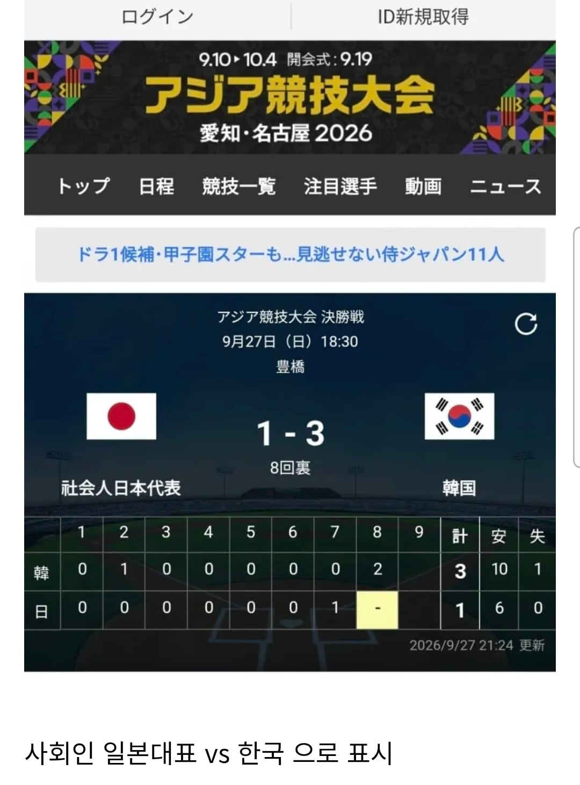

원래부터 이렇게 표시한다고는 하는데
ᆢ 원래부터 왜 그랬는지?

원래부터 이렇게 표시한다고는 하는데
ᆢ 원래부터 왜 그랬는지?
뭣? 그럼 쟤들은 내일 출근한다는 소리임?
그러함
만화 보고 왔더니 한명이 댓글창 전세냈누 ㄷㄷ
ㅋㅋㅋㅋㅋㅋㅋㅋㅋㅋㅋㅋㅋㅋㅋㅋ
병ㅇ신컨셉유지하기로 했나보네
우리는 이걸 국가대표라고 부르기로 했어요
검색하면서 나온 자료로 gpt에 넣으니까
KBO, NPB 리그 진행 도중에 아시안게임 진행 하고
KBO는 병역특례가 걸려 있어서 리그 도중에도 선수 차출하고
NPB선수들은 나와도 얻는 제도적 이점이 없다고 해서 주력 선수를 차출 할 이유가 없다 라고 나옴
그거랑 상관없이 각 나라 사정이 어떻든
가슴에 자국 국기 달고 나오면 그 나라 대표임
이건 우리도 그렇고 세계공통임
일뽕은 진짜 음침한 나라다
아시안게임 아시안 지역 국가끼리 하는 대결이니 그 나라 대표긴 하지 짜치긴 함
음침 그자체야
음습
저능아새끼들 만선이노
지든 이기든 원래 저렇게 써왔는데 저걸 보고 음침하니 뭐니 따지는 애들이 더 병맛남
뭐가문제임?
야구 아는사람만 알 수 있는건가?
아니면 '사회인 일본야구단' 뭐 그런게 존심싸움같은거란건가?
일본국가1군대표 아니야 우린 사회인 내보냇어
우린 져도 당연해 하지만 이기면 우린 1군도 아닌데 이겼어
대충 읽어보니까 프로랑 사회인이랑 관리주체가 다르고 프로는 규칙때문에 못 나와서 따로 표시하나봄
영포티 틀딱들이 만선이야
진다고 해도 정신승리하려고 저러는거?